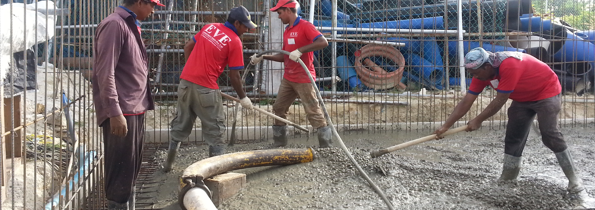

EVE Constructions

Eve Construction was established as a local investment in 2003. With a small team and a vision in mind, milestones were achieved. We were registered as a company on 24th April 2013, with a vision to lead in the field of civil construction, by providing the best service to the fulfillment of all our clients. Being small but steady in the beginning, we have completed various projects. Our entire team has the ability to face any challenges offered by the construction segment.

Today our main work includes renting machinery for concrete which includes Cement Mixer and Concrete Pump, renting vehicles such as folk lifts, excavators, crane lorries and pickups. We also provide plumbing service, electrical wiring service, roofing & decking, furniture fabrication and building maintenance such as painting and revising tear and wear.

Over the years, we have built various projects:
- M. Scooner, Male’, 5 storey building, completed on 26th April 2004
- M. Kovarik, Male’, 7 storey building, completed on 13th January 2008
- M. Dhilaaveys, Male’, 10 storey building, completed on 8th January 2009
- M. Guldhasthage, Male’, 6 storey building, completed on 3rd December 2010
- M. Dhilaavaruge, Male’, 10 storey building, completed on 18th May 2010
- M. Rafa, Male’, 6 storey building, completed on 8th January 2013
- Lot 10082, Eve Beach House, Hulhumale, 4 storey building, completed on 1st August 2014
- Lot 10710, Eve Caurica, Hulhumale, 4 storey building, completed on 1st February 2015
- M. Kudhehigasdhodhuge, Male’, 10 storey building, completed on 1st December 2016
- M. Yellowsea, Male’, 11 storey building, completed on 01st November 2018